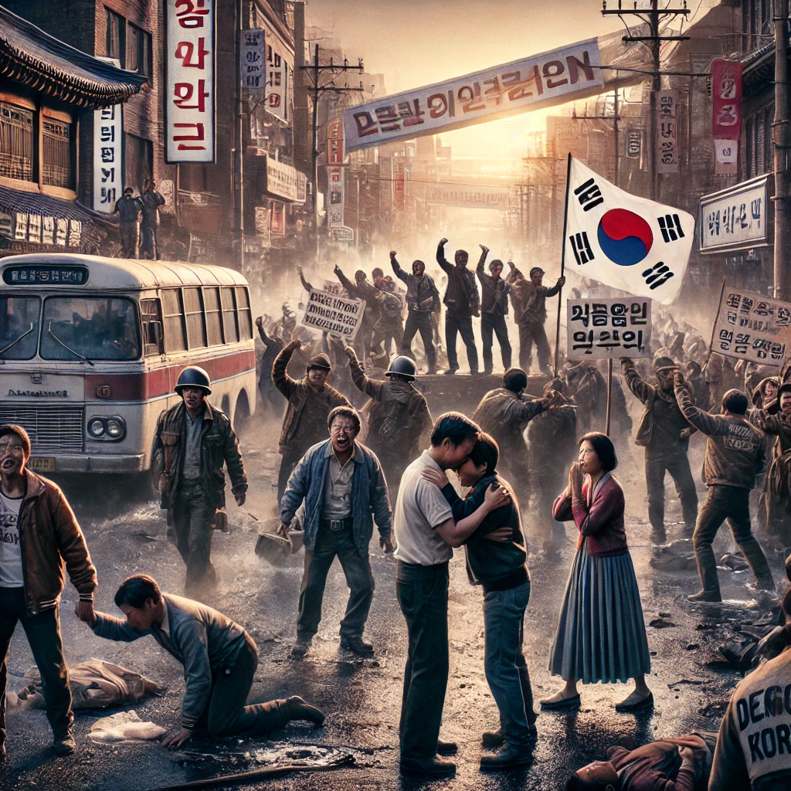

소년이 온다
목차
작가
한강
출판일
2014년
감상평에 대한 AI그림
광주 민주화 운동의 참혹함을 생생하게 그려내며, 인간의 존엄성과 기억의 중요성을 되새기게 하였다.
작품을 읽으며 폭력 앞에서 무력했던 사람들의 절규와 상처가 가슴 깊이 파고들었다.
특히 죽음 이후에도 살아남은 이들이 겪는 고통과 죄책감이 너무나도 처절하게 다가왔다.
담담하면서도 강렬한 문체는 슬픔을 배가시키며, 잊혀서는 안 될 역사의 의미를 더욱 깊이 새기게 하였다.

감상평에 대한 AI 감정평가
이 감상문에서 나타나는 감정을 정리하면 다음과 같습니다.
✨ 슬픔과 애도 – 폭력 앞에서 희생된 사람들의 절규와 상처를 보며 깊은 슬픔과 애도의 감정이 나타남.
✨ 고통과 공감 – 살아남은 이들이 겪는 고통과 죄책감에 대해 처절한 공감을 표현함.
✨ 경각심과 책임감 – 잊혀서는 안 될 역사를 기억하고, 이를 되새겨야 한다는 책임감과 경각심이 강조됨.
이러한 감정을 통해 감상문이 작품이 주는 메시지를 깊이 있게 받아들이고 있음을 보여준다.